This page gives a tutorial on how to type graphemes and other inline content in ATF.
Although you will see references to GDL here, use of ATF in typing texts does not require any knowledge of GDL. GDL, the Grapheme Description Language, is the name for the model and XML vocabulary used to describe graphemes to computers. This tutorial is actually a subset of the full GDL specification [http://oracc.org/ns/gdl/1.0/index.html] intended to make it easy to start using ATF.
These days most ATF is generated in Unicode. However, it can also be restricted to ASCII characters, for which we define simple equivalents for the characters used in cuneiform transliteration which are not in the ASCII character set. The following table gives the ASCII sequences and the Unicode codepoints to which the ATF processor translates them. Certain conventions are not used in CDLI-strict notation; this is indicated in another column.
| Unicode-ATF | ASCII-ATF | Character | CDLI-Strict?1 |
|---|---|---|---|
1Characters not in the strict repertoire are not permitted in CDLI archival ATF. | |||
2Lowercase x is permitted
only in sign values; in sign names, only uppercase X is
permitted as a notation for subscript-x. In sign names, lowercase
x is an operator. | |||
| sz | š | U+161 | yes |
| SZ | Š | U+160 | yes |
| s, | ṣ | U+1E63 | yes |
| S, | Ṣ | U+1E62 | yes |
| t, | ṭ | U+1E6D | yes |
| T, | Ṭ | U+1E6C | yes |
| s' | ś | U+015B | yes |
| S' | Ś | U+015A | yes |
| ' | ʾ | U+02BE | yes |
| 0-9 | subscript ₀-₉ | U+2080-U+2089 | yes |
| x2 | subscript ₓ | U+208A | yes |
| X2 | subscript ₓ | U+208A | yes |
| h, | ḫ | U+1E2B | no |
| H, | Ḫ | U+1E2A | no |
| j | ŋ | U+014B | no |
| J | Ŋ | U+014A | no |
Signs may be simple values or names, or compound sign names. Compound signs are made up of simple names combined with operators or affected by modifiers or sign-variant indicators. Names and values are one part of number signs. The forms of the various kinds of signs, as well as the compound sign operators, modifiers and variant indicators, are described in turn below.
In ATF a sign value is a sequence of lowercase letters followed by optional subscript digits:
a a₂ babbar dug₄ ṣe₂ ša₁₃
In ATF a simple sign name is a sequence of uppercase letters followed by optional subscript digits:
A BA ŠA₃ GILIM
A sign name in a transliteration conventionally means either that the sign is clear but its reading is uncertain, or that the sign is being used as a logogram. ATF has some simple rules to mark the difference between these two:
$) before a sign
name to indicate that its reading is uncertain.~) before a sign name to
indicate that it is a logogram.As a result of these rules, $AN always means "the
AN-sign is there but I am not sure which reading to choose" and
~AN always means "the AN sign is a logogram here". The
meaning of AN can be configured to mean either one. By
default, in Sumerian language context the meaning of AN is
equivalent to $AN. In all other language contexts, the
meaning of AN is equivalent to ~AN. This
means that typing logograms in Akkadian is as easy as:
ša AN
Two special classes of sign name are signlists and numerical
sign names. Numerical sign names match the pattern
N<DIGITS>. Signlist names consist of an uppercase
alphabetic prefix and an ASCII digit suffix; the prefix is the name of
the sign list and the suffix is the number of the sign in that list.
Prefixes fall into one of two groups. Generic signlist prefixes
consist of any one or two uppercase letters followed by
SL; hence, CDSL, PSL,
PCSL are all valid signlist prefixes. The second group
is the built-in set of historic sign lists.
In ATF signlist names and numerical sign names look like this:
N01 N34 LAK37 ZATU777
| Name | Bibliography |
|---|---|
| ABZ | R. Borger, Assyrisch-babylonische Zeichenliste (AOAT 33; Neukirchen-Vluyn 1978) |
| BAU | E. Burrows, Archaic Texts (UET 2; London 1935) |
| HZL | C. Ruster and E. Neu, Hethitisches Zeichenlexikon (Harrassowitz Verlag 1989) |
| KWU | N. Schneider, Die Keilschriftzeichen der Wirtschaftsurkunden von Ur III (Rome 1935) |
| LAK | A. Deimel, Liste der archaischen Keilschriftzeichen (WVDOG 40; Berlin 1922) |
| MEA | R. Labat, Manuel d'épigraphie akkadienne (6th ed. Paris 1988) |
| MZL | R. Borger, Mesopotamisches Zeichenlexikon (AOAT 305; Ugarit-Verlag 2003) |
| REC | F. Thureau-Dangin, Recherches sur l'origine de l'écriture cunéiforme (Paris 1898) |
| RSP | Y. Rosengarten, Répertoire commenté des signes présargoniques sumériens de Lagash (Paris 1967) |
| ZATU | M. Green and H. J. Nissen, Zeichenliste der Archaischen Texte aus Uruk (ATU 2; Berlin 1987) |
Signs which have the special subscript ₓ
must be qualified in ATF by placing the sign name in parentheses
immediately after the sign value:
baₓ(PI) ZAX(LAK384)
Note: in sign values, use subscript
ₓ; in sign names, use uppercase X.
In ATF a number sign conforms to the pattern:
REPETITION '(' GRAPHEME ')'
where REPETITION is either a number giving the
repetition factor or the letter n or the combination
n+DIGITS (in sign names or compound signs use
N instead of n). The GRAPHEME is a sign value or
sign name, including compound signs.
The following examples illustrate a few basic ATF numerical forms:
1(N₀₁) 4(ban₂) 1(aš@c) n(geš₂) n+1(aš)
The notation n(aš) means: some quantity in the
aš system which is not determinable from the traces on
the tablet. The notation n+1(aš) (where '1' could be any
number) means: a quantity in the asz system which is
damaged or lost and which is at least 1 but may be more. ATF does not
use the notation x+1(aš).
See also the pages on numbers, metrology and mathematical notations.
In ATF the at-sign (@) precedes each modifier;
multiple modifiers may be given in which case each modifier requires
its own at-sign. The entire sequence of modifiers (and allographs,
described below) belongs to the immediately preceding sign or group.
Sign names and values with modifiers and/or allographs following them
should not be be treated as compounds.
| Modifier | ATF | Example | Sign |
|---|---|---|---|
| curved | @c | AŠ@c |
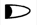 |
| flat | @f | 1(N01@f) |
|
| gunu (4 extra wedges) | @g | DU@g |
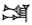 |
| sheshig (added še-sign) | @s | DU@s |
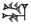 |
| tenu (slanting) | @t | GAN₂@t |
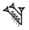 |
| nutillu (unfinished) | @n | SAG@n |
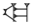 |
| zidatenu (slanting right) | @z | AŠ@z |
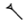 |
| kabatenu (slanting left) | @k | AŠ@k |
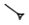 |
| vertically reflected | @r | U@r |
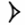 |
| horizontally reflected | @h | N07~a@h |
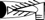 |
| rotated | @<DIGITS> | NAGA@180 | |
| variant | @v | 4(ban₂)@v |
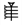 |
Modifiers on numerical graphemes may go inside or outside the closing parenthesis depending on the naming schema for values and sign names used by the style manual or sign list for an individual project.
In ATF an allograph, or systemic sign variant, is introduced by the
tilde-prefix (~); the sequence of characters following
the tilde is restricted to ASCII digits and lowercase letters,
except for x.
|EN~a| |EN~b| |GA₂~a1| |GA₂~a2| |GEŠTU~axŠE~a@t|
The use of x as an operator in examples like the last
one in the line above is the reason for excluding x from
the characters allowed in allograph sequences.
The special allograph ~v is used instead of
~x to indicate that the form is some variant of the sign
in question but the specific variant is not identified.
The special allograph ~t is used to indicate tokens,
e.g., 1(N₀₁~t).
Note that the allograph mechanism is not the way that unusual sign
forms are notated in ATF; for this the normal exclamation mark
(!) is used. The allograph mechanism is provided to
support systematic subdivision of sign-forms relative to extant sign
lists or sign name descriptions.
Form variants are preceded by the backslash character
(\) and consist of lowercase letters and or digits.
The difference between a simple sign and a compound sign is that a
a compound sign is a sequence of sign names which contains at least
one operator, i.e., a character which represents a relationship
between multiple graphemes. In ATF the set of characters used for
operators is: × % @ & . : +.
In ATF compound graphemes are enclosed at the outer level in
vertical bars ("pipes", |...|):
|KA×A|
Signs are frequently modified or operated on as a group; parentheses are used to group multi-part constituents:
|GA₂×(ME.EN)| |(GI&GI)׊E₃|
Note that modifiers and allographs must not be placed after the closing pipe; instead, they must be put inside the pipe adding grouping characters if necessary:
|GA₂~a×EN| |GA₂×EN~a| |(GA₂×EN)~a|
Th examples above all mean different things. The first,
|GA₂~a×EN|, means: "the a-allograph of the sign GA₂
containing sign EN". The second, |GA₂×EN~a|, means: "GA₂
containing the a-allograph of sign EN". The third,
|(GA₂×EN)~a|, means: "the a-allograph of the group
consisting of sign GA₂ containing sign EN". In example three the bad
form *|GA₂×EN|~a would result in a parse error.
Each of the compound operations has its own ATF notation as summarized in the table below:
| GDL | ATF | Example | Sign |
|---|---|---|---|
| beside | . | |DU.DU| | 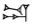 |
| joining | + | |LAGAB+LAGAB| | 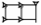 |
| containing | × | |GA₂×AN| | 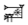 |
| containing/group | × | |GA₂×(ME.EN)| | 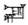 |
| above | & | |DU&DU| | 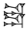 |
| crossing | % | |GI%GI| | 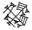 |
| opposing | @ | |LU₂@LU₂| | 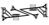 |
| repeated | 3× | |3×AN| | 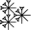 |
| repeated | 4× | |4xLU2| | 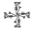 |
Several types of cuneiform punctuation are supported in ATF and all
of them must be preceded and followed by a space (in the case of
* and / the punctuation may be immediately
followed by a sign name in parentheses and then the following space).
The recognized punctuation codes are:
The vertical "colon" sign often found in commentaries.
N.B.: If the single colon occurs within a word it
must be transliterated with the grapheme name form P₂
/(P2).The punctuation signs may also be transliterated using the following names: P1 (
); P2 (); P3 (); P4 (); MZL592~b (as:').
In ATF there are several general ways of specifying information about graphemes:
! ? * #. Flags may appear only immediately after a
grapheme (after the parenthetic part of a qualified grapheme), and are
not permitted within compound signs. Flags may be given after the
closing pipe of a compound sign.(...)
[...] {...} {(...)} <...> <<...>> <(...)>.
Brackets are not permitted within the body of graphemes or within
compound signs.%) and a
label which alter the current value of a property. The value remains
current until another shifter for the same property is encountered; or
until the closing of the nearest enclosing bracket; or until the end
of the line. Sample shifts include: %s %akk %1. A table
of all of the shifts, properties and values is given later on in this
tutorial. Shifts are not permitted within compound signs. Shifts
must always be followed by one or more spaces.Partially broken signs are flagged by putting a hash
(#) after the grapheme. Signs which are completely
missing from the tablet are enclosed in square brackets.
ba# [a]-ba mudₓ(|ZI&ZI.A|)#
Collation, uncertainty and remarkability are flagged by
*, ? and ! respectively. If a
grapheme is flagged as remarkable it may indicate a correction or an
unusual form. Corrections are often followed by the actual sign in
parenthesis, and this convention is supported but not required in ATF
transliterations.
a* ki? šum! ki!?*(DI)
ATF divides glosses into three types:
{...}; semantic determinatives require no special
marking, but phonetic glosses and determinatives should be indicated by adding a
plus sign (+) immediately after the opening brace, e.g.,
AN{+e}. Multiple separate
determinatives must be enclosed in their own brackets, but a single
determinative may consist of more than one sign (as is the case with
Early Dynastic pronunciation glosses).{{...}}.{(...)}.Glosses must have a space or hyphen on one side or the other. They may have spaces on both sides. Glosses may not touch directly both the preceding and following graphemes; nor may they have hyphens at both ends.
{d}utu larsa{ki} {+u₃-mu₂}u₂-mu₁₁ AN{+e}
du₃-am₃{{mu-un-<(du₃)>}}
{(1(u))} {(%a he-pi₂ eš-šu₂)}
The status of one or more graphemes' presence/absence often requires notation. The following bracketings support the common practices in Assyriological transliteration:
[x (x) x]
mu-un-<pa₃>-da
mu-un-<<an>>-pa₃-da
1) [AFTER BOUNDARY] The graphemes
are implied because the scribe has left a blank space on the tablet;
common in liturgies and some types of administrative texts.
BOUNDARY can be space, hyphen, etc.
2) [AFTER GRAPHEME] The graphemes
are the text meant by a surrogate grapheme such as MIN;
common in lexical texts.
1. {d}suen he₂-me-en
2. {d}nanna <(he₂-me-en)>
1. a = %a mu-u₂
2. illu = %a MIN<(mu-u₂)>
Surrogates are defined in the XTF2 schema because
their content model is l.inner.
Note: in all of these cases except the last there must be a space or hyphen before the opening bracket and after the closing bracket.
A simple mechanism for identifying distinct scripts on a single
document is provided by the percent-digit commands which consist of a
percent sign followed by a single digit: %0 %1 %2 %3 %4 %5 %6 %7
%8 %9. The characteristics of the scripts identified by
numbers can be specified in the protocols section at the start of an
ATF file.
By default, the normal sized, normal form script is
%0; this only needs to be specified rarely. By default,
the smaller script used for glosses is %1. Two other
default scripts are %2 = Assyrian and %3 =
Babylonian as a contrastive pair in neo-Assyrian documents.
This example shows how to enter a gloss which is in smaller script:
mu-un-šum₂{%1 szu}
At the start of the ATF file, amongst the other protocols [http://oracc.museum.upenn.edu/ns/xtf/1.0/atftut.html#Protocols], you need to define the language of your (ancient) text. (For instructions on how to define the language of your translation, see the page on translations [http://oracc.museum.upenn.edu/doc/builder/translation].)
After the &-line but before the text begins, enter a single protocol line which begins #atf: lang, followed by a space and the relevant language or dialect code in lower-case. This example is for Neo-Babylonian:
#atf: lang akk-x-neobab
This line ensures that all transliterated and lemmatised words in the text will be treated as Neo-Babylonian--unless you explicitly mark otherwise, as described below.
To shift to a different language within the text, write a percent sign followed immediately by the relevant language code. You will also need to explicitly signal the shift back to the default language. For instance, if you had not defined Emesal as the default alternative language in the first example you could write:
8. %e še-eb %s e₂-kur-ra ba-du₃-a-bi
As before, the text is assumed to switch back to the default language at the start of every new line.
Here is a list of the most frequently used language and dialect codes. The full set, including peripheral dialects of Akkadian, is given on the Language Tags [http://oracc.museum.upenn.edu/doc/developer/l2/langtags/] page of the developer documentation.
| Language or dialect | Protocol Code | Inline Code(s) | Notes |
|---|---|---|---|
| Akkadian | (none: must specify dialect too) | a or akk | |
| Early Akkadian | akk-x-earakk | eakk | For pre-Sargonic Akkadian. |
| Old Akkadian | akk-x-oldakk | oakk | |
| Ur III Akkadian | ua | ur3akk | |
| Old Assyrian | akk-x-oldass | oa | |
| Old Babylonian | akk-x-oldbab | ob | |
| Old Babylonian peripheral | akk-x-obperi | ||
| Middle Assyrian | akk-x-midass | ma | |
| Middle Babylonian | akk-x-midbab | mb | |
| Middle Babylonian peripheral | akk-x-mbperi | ||
| Neo-Assyrian | akk-x-neoass | na | |
| Neo-Babylonian | akk-x-neobab | nb | |
| Late Babylonian | akk-x-ltebab | nb | |
| Standard Babylonian | akk-x-stdbab | sb | |
| Conventional Akkadian | akk-x-conakk | ca | The artificial form of Akkadian used in lemmatisation Citation Forms. |
| normalised | (none: main text must be transliteration) | n | Used in lexical lists and restorations; try to avoid wherever possible. |
| transliterated (graphemic) Akkadian | (none: must specify dialect too) | g | Only for use when switching from normalised Akkadian. |
| Hittite | hit | h or hit | |
| Sumerian | sux or sux-x-emegir | s, sux, or eg | The abbreviation eg stands for Emegir (main-dialect Sumerian). |
| Emesal | sux-x-emesal | e, es | |
| Syllabic | sux-x-syllabic | sy | |
| Udgalnun | sux-x-udgalnun | u |
A general facility for annotating graphemic proximity is provided
with the notation $<zone>, where zone is
an arbitrary region of the surface defined only by the transliterator
and represented by a single digit. Search engines may provide
facilities to find multiple graphemes with the same zone code (in the
same line) and possibly to relate grapheme proximity to the difference
between zone codes (i.e., in a$1 e$2 i$3, the
i grapheme may be considered closer to e
than to a (the ordering relationships of zone codes are
likely to be problematic, however). This is an experimental feature
intended for use in exploring the graphotactics of Early Dynastic
texts.
To indicate that there is any kind of newline within a
transliterated sequence of words or graphemes that is in the same
ruled case (usually, but not always, indented), use the semi-colon
(;).
To indicate that there is a line-break in the transliterated line
(i.e., normally one which is separately ruled), use a double slash
sequence (//).
To indicate that an unknown number of signs is missing, use an
ellipsis (...).
If it is necessary to indicate any other information which is not
part of the grapheme sequence the compound brackets
(#...#) may be used. This feature should be used rarely
if ever.
mu-un-;e₃ [...] [(...)]
For the purposes of transliteration, a "word" is anything between spaces, including isolated and uninterpretable signs.
In ATF words are separated by spaces, and graphemes within words
are joined by hyphens. Note that periods (.) are only
permitted inside compound graphemes.
Simple choices in the transliteration of single graphemes may be expressed
by separating the graphemes with a slash (/). More than
one choice may be given, but each sequence of choices only applies to
a single grapheme.
The fact that signs are inscribed on the object in a different
order than they are transliterated may be indicated by joining
graphemes with the colon (:) instead of the hyphen. This
mechanism is a convenient shorthand which is intended to cover cases
of occasional reversal in sign order. It is only available within
words, it is not permitted in compound signs, and it may only be used
with pairs of reversed graphemes. A different, completely general,
mechanism for indicating more complex reorderings is provided under
the concept of Multiplexing and is explained in the description of
document structure.
a-ba mu-un-ba-al-e KI/DI-bi LAGAB-DUL₃ mu:un-du₃01 Jul 2013
Steve Tinney
Steve Tinney, 'ATF Inline Tutorial', Oracc Documentation, Oracc, 2013 [http://oracc.museum.upenn.edu/doc/editinginatf/primer/inlinetutorial/]